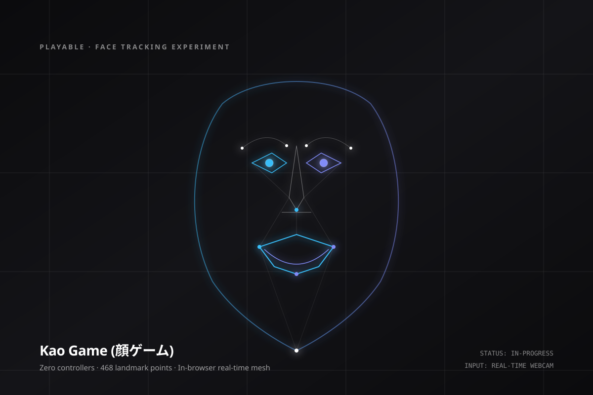

- 0
- Physical game controllers required — your facial muscles are the pad コントローラー不要、顔の表情筋そのものが十字キーになる
- 468
- Geometric landmark points calculated in real-time on-device 端末内でリアルタイム追跡される468点の顔面幾何学ランドマーク
- 3
- Playable mini-games challenging rhythm, endurance, and symmetry リズム、持続力、左右対称性を鍛える3つのミニゲーム
- 100%
- On-device edge inference with zero video frames transmitted over network 完全ローカル動作。カメラ映像や顔情報は一切ネットワーク送信されません
Wellness disguised as playful challenge. 運動を遊びへと転換する
Desk workers stare at screens for eight hours, freezing their facial posture into tense scowls. By gamifying eyebrow lifts, open-mouthed laughter, and head tilts into target-hitting mechanics, the workout happens without feeling like a chore. 長時間のデスクワークで強張りがちな表情筋。眉の上下や口の開閉、首の傾きをターゲットヒットのゲーム性に変換することで、義務感なしに自然と顔のコリがほぐれます。
Privacy-first edge architecture. プライバシーに配慮したエッジ推論
Cameras in software trigger privacy fears. Kao Game runs entirely within the client's browser WebAssembly runtime. Video pixels are processed in memory and immediately discarded, extracting only relative vector deltas. カメラ利用への不安を払拭するため、WebAssemblyを用いた完全ブラウザ内エッジ処理を採用。映像フレームはメモリ上でベクトル差分を抽出した瞬間に破棄され、外部サーバーとは一切通信しません。
Adaptive neutral baseline calibration. 個人差を吸収するベースライン補正
Human faces are fundamentally asymmetrical. The system calibrates a 3-second neutral resting baseline upon launch, mapping input deltas relative to each individual's unique resting geometry. 人間の顔の骨格や左右差は千差万別です。起動時に3秒間のニュートラル姿勢を計測・補正することで、誰でも無理なく正確な操作入力を得られるよう設計されています。
Potential applications 期待される応用分野
- Remote work fatigue relief: A 2-minute micro-break to revitalize focus and release tension between long video calls. オンライン会議の合間に、2分で表情筋の緊張をリセットし集中力を取り戻す休憩ツール。
- Accessible touchless interfaces: Navigation and selection mechanics for users with limited motor control or hands-busy environments. 手や腕を使えない環境や、身体的制約を持つユーザーのためのタッチレス入力インターフェース研究。
My Contribution 担当領域
- Designed the facial interaction game mechanics and scoring curves
- Engineered in-browser computer vision mesh and landmark tracking
- Developed calibration pipeline for zero-latency facial input
Research Trajectory 研究の位置づけ
- Part of the ongoing "controller-free" physical interaction experiments at Creativity Is Everywhere LLC
- Exploring human wellness at the seam of play and machine perception